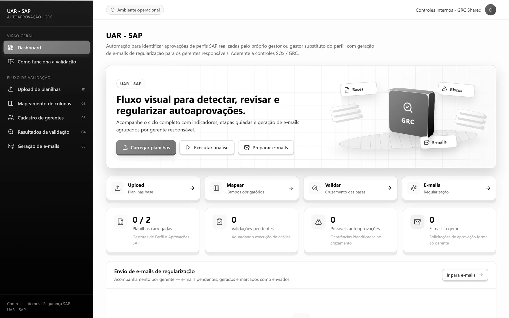
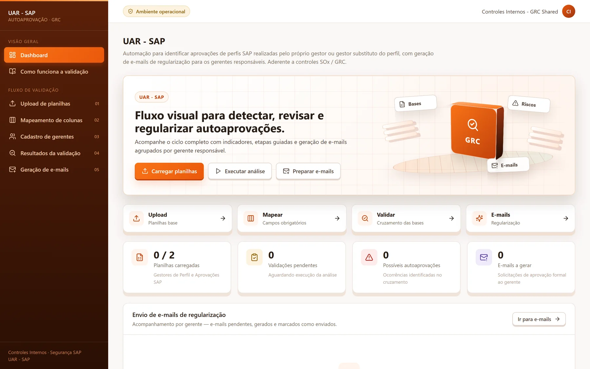

UAR-SAP
Governança de acessos | Identificação de autoaprovações
Identificar possíveis autoaprovações em acessos SAP exige cruzar bases, conferir responsáveis e considerar titulares e substitutos. A execução manual dessa análise demandava conferências repetitivas e dificultava a identificação dos casos que precisavam de regularização.
O UAR-SAP automatiza esse cruzamento e prepara e-mails personalizados com as respectivas planilhas de evidências para solicitar aprovação ou regularização. A solução reduziu o tempo de preparação das revisões, padronizou as comunicações e permitiu que a equipe concentrasse sua atenção na análise dos casos identificados.
React · TypeScript · Electron